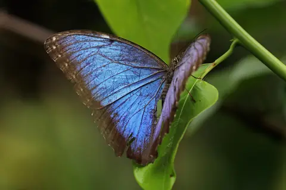
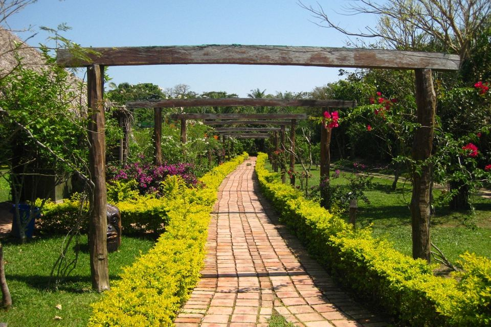
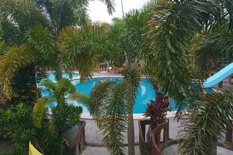
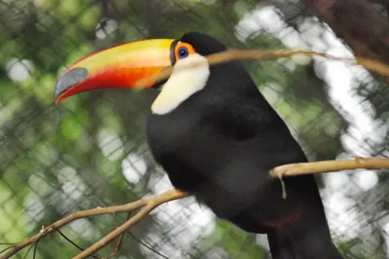

Más vendido

Mariposario y orquideario
Entra al domo de mariposas del Biocentro Güembé, mira cómo nacen en la sala de crianza y recorre el orquideario.
Duración: medio día. Desde Bs 220 por persona. Ver detalles del mariposario
Senderos Güembé
Tours de naturaleza, fauna y aventura en el Urubó, a minutos de Santa Cruz de la Sierra

Somos una familia cruceña que desde 2014 acompaña a viajeros de todo el mundo por los senderos del Biocentro Güembé, en el camino a Porongo. Grupos pequeños, guías certificados y precios justos que se quedan en la comunidad.
Más vendido

Entra al domo de mariposas del Biocentro Güembé, mira cómo nacen en la sala de crianza y recorre el orquideario.
Duración: medio día. Desde Bs 220 por persona. Ver detalles del mariposario

Senderos, aviario y mariposario con guía, almuerzo en el parque y tarde libre en las piscinas naturales.
Duración: día completo. Desde Bs 380 por persona. Ver detalles del Full Day

Tucanes, parabas y loros en uno de los aviarios más grandes de Sudamérica, ideal para ir en familia.
Duración: medio día. Desde Bs 200 por persona. Ver detalles del aviario